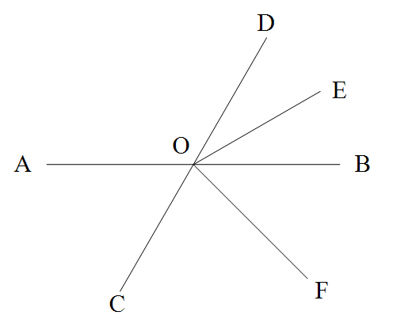
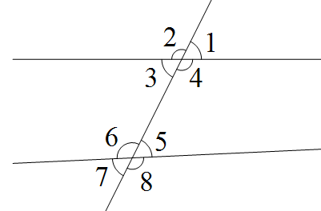
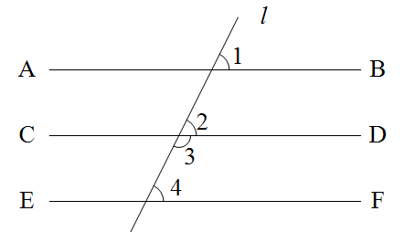
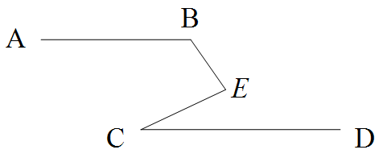
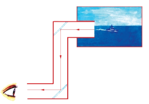

⚠️ 注意：平行线的判定与性质互为逆用，解题时要分清已知条件是“角的关系”还是“平行关系”。
| 类型 | 定义 | 性质/判定 | 符号语言 |
|---|---|---|---|
| 对顶角 | 两条直线相交，有公共顶点且两边互为反向延长线的两个角 | 对顶角相等 | $\because \angle 1$与$\angle 3$是对顶角，$\therefore \angle 1=\angle 3$ |
| 邻补角 | 有一条公共边，另一边互为反向延长线的两个角 | 邻补角互补 | $\because \angle 1$与$\angle 2$是邻补角，$\therefore \angle 1+\angle 2=180^\circ$ |
| 垂线 | 两条直线相交成直角，其中一条叫另一条的垂线 | 过一点有且只有一条直线与已知直线垂直 | $\because AB\perp CD$，$\therefore \angle AOC=90^\circ$ |
| 点到直线距离 | 从直线外一点到这条直线的垂线段的长度 | 垂线段最短 | 点$P$到直线$l$的距离$=$垂线段$PA$的长度 |
| 同位角 | 在截线同侧，被截线同一方 | 判定：若相等→平行；性质：若平行→相等 | “F”型 |
| 内错角 | 在截线两侧，被截线之间 | 判定：若相等→平行；性质：若平行→相等 | “Z”型 |
| 同旁内角 | 在截线同侧，被截线之间 | 判定：若互补→平行；性质：若平行→互补 | “U”型 |
| 平行线 | 同一平面内不相交的两条直线 | 传递性；判定与性质见上 | $a\parallel b$ |
例1 如图，直线$AB$、$CD$相交于点$O$，$OE$平分$\angle BOD$，$OF$平分$\angle COE$，$\angle AOD:\angle BOE = 4:1$，求$\angle AOF$的度数。

设$\angle BOE = x$，则$\angle AOD = 4x$。
$\because OE$平分$\angle BOD$，$\therefore \angle DOE = \angle BOE = x$，$\angle BOD = 2x$。
$\because \angle AOD + \angle BOD = 180^\circ$（邻补角），$\therefore 4x + 2x = 180^\circ$，解得 $x = 30^\circ$。
$\therefore \angle AOD = 120^\circ$，$\angle BOD = 60^\circ$，$\angle DOE = 30^\circ$。
$\because \angle COE + \angle DOE = 180^\circ$，$\therefore \angle COE = 150^\circ$。
$\because OF$平分$\angle COE$，$\therefore \angle COF = \angle EOF = 75^\circ$。
$\because \angle AOC$与$\angle AOD$是邻补角，$\therefore \angle AOC = 60^\circ$。
$\therefore \angle AOF = \angle AOC + \angle COF = 60^\circ + 75^\circ = 135^\circ$。
例2 如图，下列判断：①$\angle 1$与$\angle 8$是同位角；②$\angle 2$与$\angle 3$是同位角；③$\angle 3$与$\angle 5$是内错角；④$\angle 4$与$\angle 8$是同旁内角。其中正确的有（ ）

根据“三线八角”位置特征分析：
• $\angle 1$与$\angle 8$在截线同侧、被截线之外 → 它们不是同位角，故①说法错误；
• $\angle 2$与$\angle 3$是同一个顶点处的邻补角，不是两条被截线与截线形成的角，故②说法错误；
• $\angle 3$与$\angle 5$在截线两侧、被截线之间 → 它们是内错角，故③说法正确；
• $\angle 4$与$\angle 8$在截线同侧、被截线同一方 → 它们是同位角，故④说法错误。
因此，正确的判断只有③。
例3 如图，已知$\angle 1 = \angle 2$，$\angle 3 + \angle 4 = 180^\circ$，求证：$AB\parallel EF$。

$\because \angle 1 = \angle 2$ (已知)，$\therefore AB\parallel CD$ (同位角相等，两直线平行)。
$\because \angle 3 + \angle 4 = 180^\circ$ (已知)，$\therefore CD\parallel EF$ (同旁内角互补，两直线平行)。
$\therefore AB\parallel EF$ (平行于同一直线的两直线平行)。
例4 如图，$AB\parallel CD$，$\angle ABE = 120^\circ$，$\angle DCE = 25^\circ$，求$\angle BEC$的度数。

过点$E$作$EF\parallel AB$，则$\angle B + \angle BEF = 180^\circ$ (两直线平行，同旁内角互补)，$\therefore \angle BEF = 60^\circ$。
$\because AB\parallel CD$，$EF\parallel AB$，$\therefore EF\parallel CD$，$\therefore \angle FEC = \angle C = 25^\circ$ (两直线平行，内错角相等)。
$\therefore \angle BEC = \angle BEF + \angle FEC = 60^\circ + 25^\circ = 85^\circ$。
例5 如果一个角的两边与另一个角的两边分别平行，且一个角比另一个角的$2$倍少$30^\circ$，求这两个角的度数。
设较小角为$x$，则较大角为$2x-30^\circ$。分两种情况：
①两角相等：$x = 2x-30 \Rightarrow x=30^\circ$，两角均为$30^\circ$；
②两角互补：$x + (2x-30)=180 \Rightarrow x=70^\circ$，较大角$110^\circ$。
$\therefore$ 两角为$30^\circ,30^\circ$或$70^\circ,110^\circ$。
核心方法：过拐点作已知直线的平行线，将角的关系转化。
中国古代最早的几何学定义之一出自战国时期的《墨经》。墨家学派在《墨经》中记载了许多几何概念的定义，例如：
这些定义比欧几里得《几何原本》早约一百年，体现了我国古代学者对几何概念的深刻洞察。在建筑中，平行线的应用比比皆是：故宫的宫殿立柱、古代房屋的梁架结构，都依赖平行与垂直来保证稳固与美观。
《墨经》中还讨论了“有间”、“盈”、“撄”等概念，涉及点、线、面、体的关系。这些成就表明，中国古代数学不仅重视计算，也有严谨的几何思想。
潜望镜是一种利用光线反射改变光路的光学仪器，常用于潜艇、坦克等观察敌情。它的核心原理可以用我们学过的平行线知识来解释。

观察图片，潜望镜中有两面镜子，它们互相平行放置。光线从上方射入，经过两次反射后从下方射出。根据光的反射规律，光线在镜面上的入射角度与反射角度总是相等的。你可以这样想象：光线在两面镜子之间拐了两个弯。
因为两面镜子是平行的，所以光线在第一次反射后形成的角度与第二次反射前的角度恰好相等（这就像平行线间的内错角相等）。这样一来，进入潜望镜的光线和离开潜望镜的光线方向就变得一致了——也就是说，它们互相平行。这个巧妙的设计使得观察者能够通过潜望镜看到被障碍物挡住的目标，而视线方向并没有改变。
你看，数学中平行线的性质在现实生活中的应用多么神奇！
数学思想： 转化思想（由线推角、由角推线）、模型思想（三线八角基本模型、拐点模型）、分类讨论（角的两边分别平行问题）、数形结合。
易错提醒： ①判定与性质不要混淆；②同位角、内错角、同旁内角必须找准截线与被截线；③垂线段最短中“垂线段”与“距离”的区别；④作图要保留痕迹并写出结论。
✨ 相交平行一线牵，角的关系紧相连 ✨